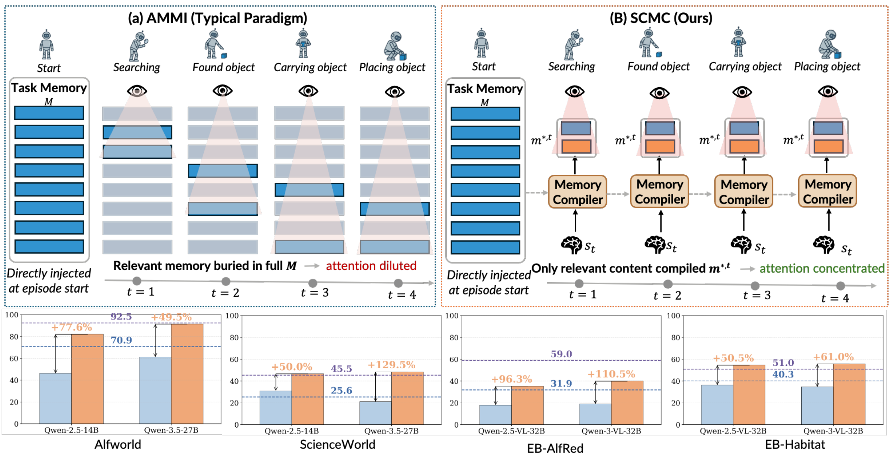
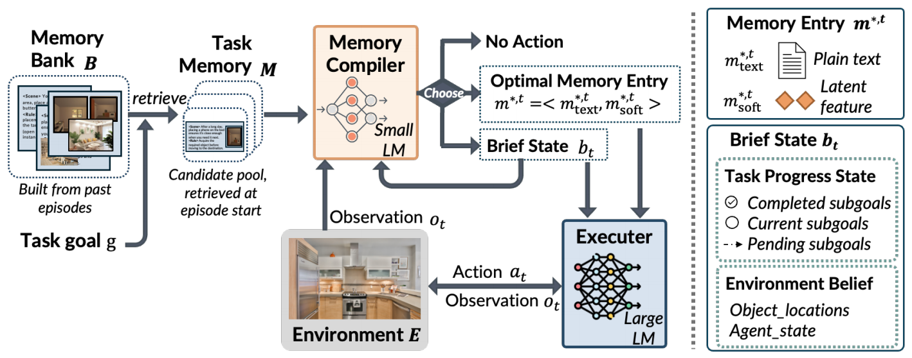
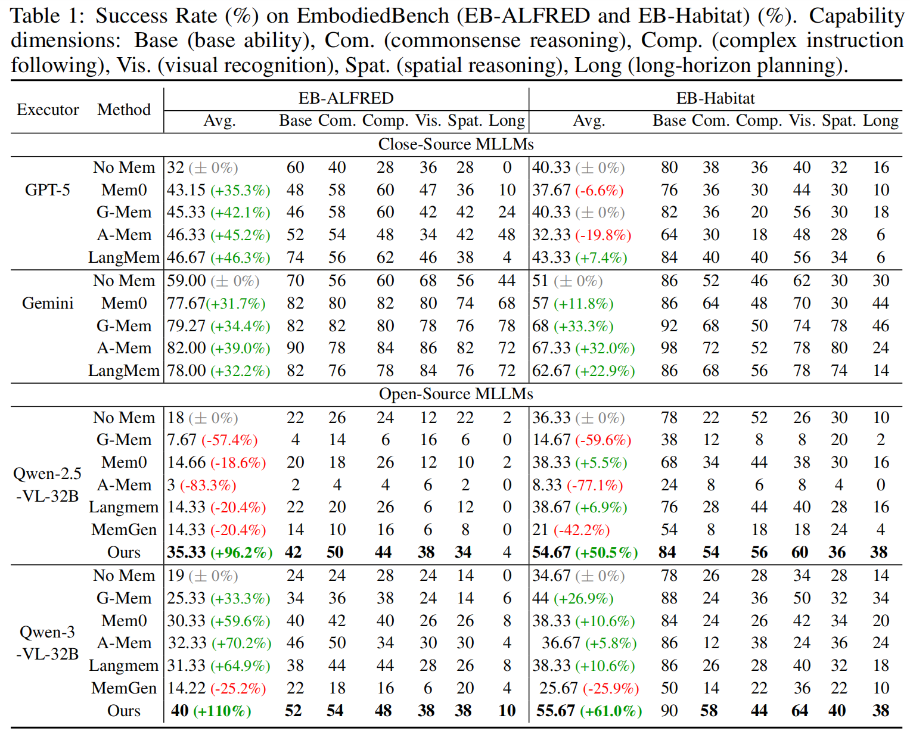
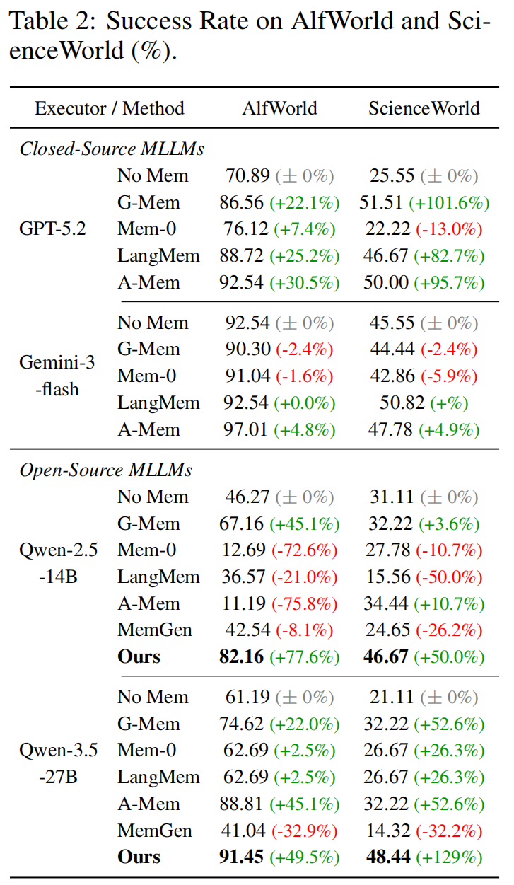
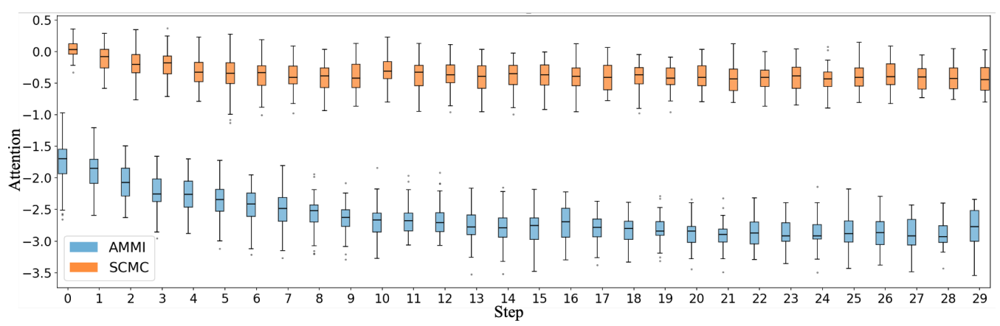

1University of Science and Technology of China
2Huazhong University of Science and Technology
3Microsoft Research
4Nanjing University
5Institute for AI Industry Research (AIR), Tsinghua University
Existing memory systems for embodied agents typically inject retrieved memory as static context at episode start, a paradigm we term Ahead-of-time Monolithic Memory Injection (AMMI). However, this static design quickly becomes misaligned with the agent's evolving state and may degrade lightweight executors below the no-memory baseline. To address this, we propose MemCompiler, which reframes memory utilization as State-Conditioned Memory Compilation. A learned Memory Compiler reads a structured Brief State capturing the agent's current execution state and dynamically selects and compiles only relevant memory into executable guidance. This guidance is delivered through a text channel and a latent Soft-Mem channel that preserves perceptual information not expressible in text. Across AlfWorld, EmbodiedBench, and ScienceWorld, MemCompiler consistently improves over no-memory across open-source backbones (up to +129%), matches or approaches frontier closed-source systems, and reduces per-step latency by ~60%, demonstrating that state-aware memory compilation improves both effectiveness and efficiency.

Figure 1: Two paradigms for memory utilization in embodied agents. (a) AMMI injects the full task memory M at episode start directly, the Executor must attend over all of M, burying valuable experience under irrelevant entries. (b) SCMC (Ours) retains M as a source library and compiles only state-relevant content m*,t at each step, ensuring the Executor receives precisely what it needs. The colored bars denote Qwen, GPT-5.2, Gemini-3-Flash, and our method, respectively, with performance measured across benchmarks.

Figure 2: Overview of MemCompiler at step t. The Memory Compiler reads runtime state st = (ot, bt) and task memory M (retrieved once at episode start), then delivers the compiled result m*,t to the Executor through two parallel channels: a text channel (m*,ttext) and a latent soft channel (m*,tsoft), which are fused at the Executor's embedding level. Brief State bt is dynamically maintained via structured operations and fed back as part of the next step's state. Note, at each step the Memory Compiler decides among four output types (Section 3.2): EXPERIENCE (m*,t only), BRIEF (Δbt only), HYBRID (both jointly), or NOACTION (neither, when no entry in M is currently applicable).


Mean pre-softmax attention logit (higher values mean more attention weight) of the Executor over memory tokens across AlfWorld episodes (steps 0–29). AMMI (blue) exhibits monotonic decay, reflecting increasing misalignment between static memory and the agent's evolving state. In contrast, SCMC (orange) maintains stable high attention throughout, indicating consistent alignment between memory and the Executor's current needs.
